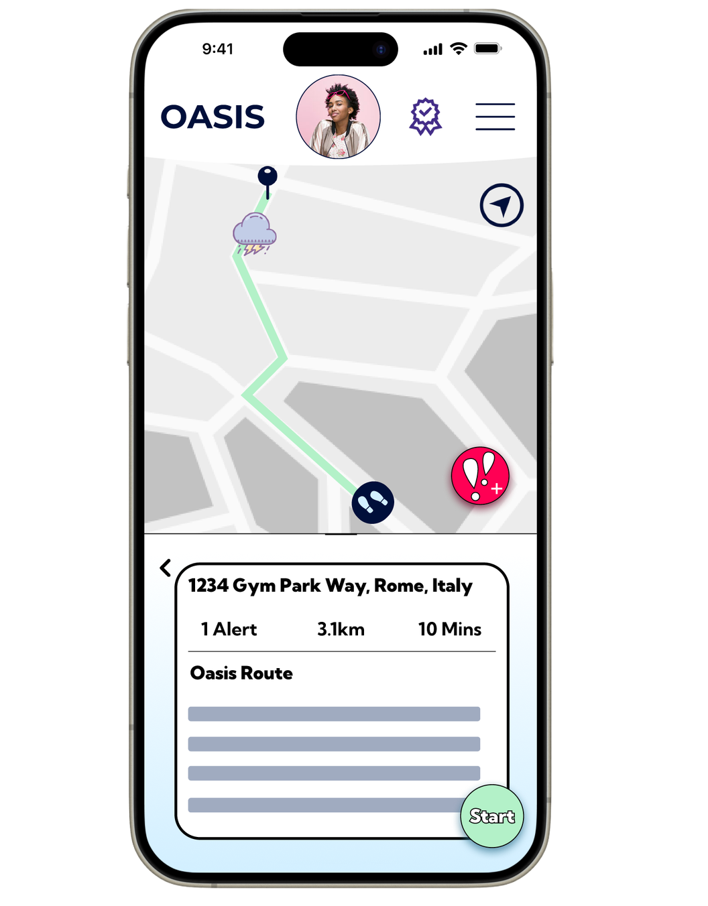
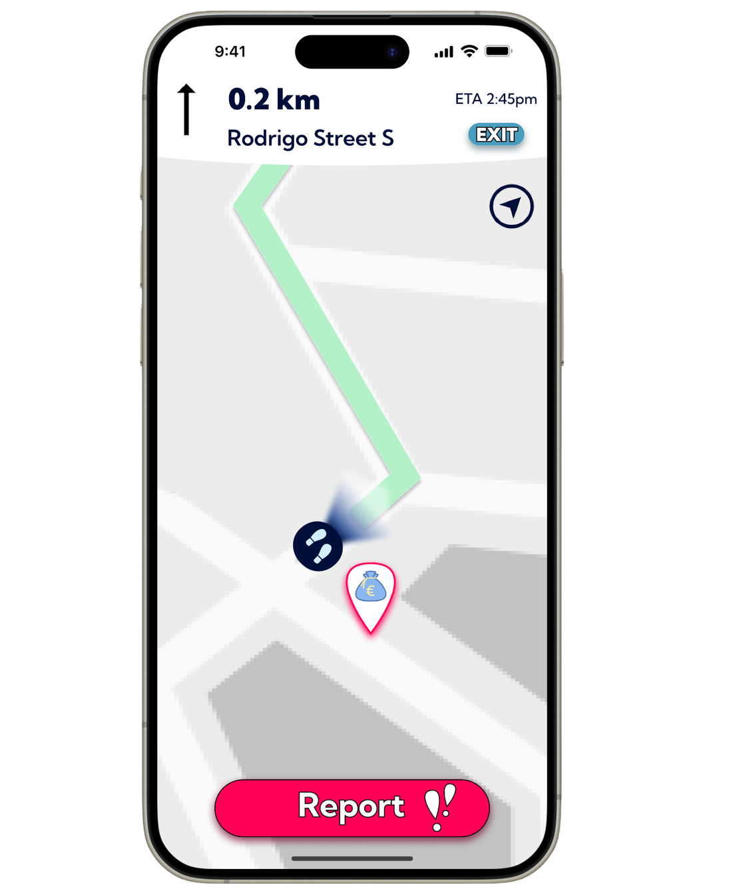
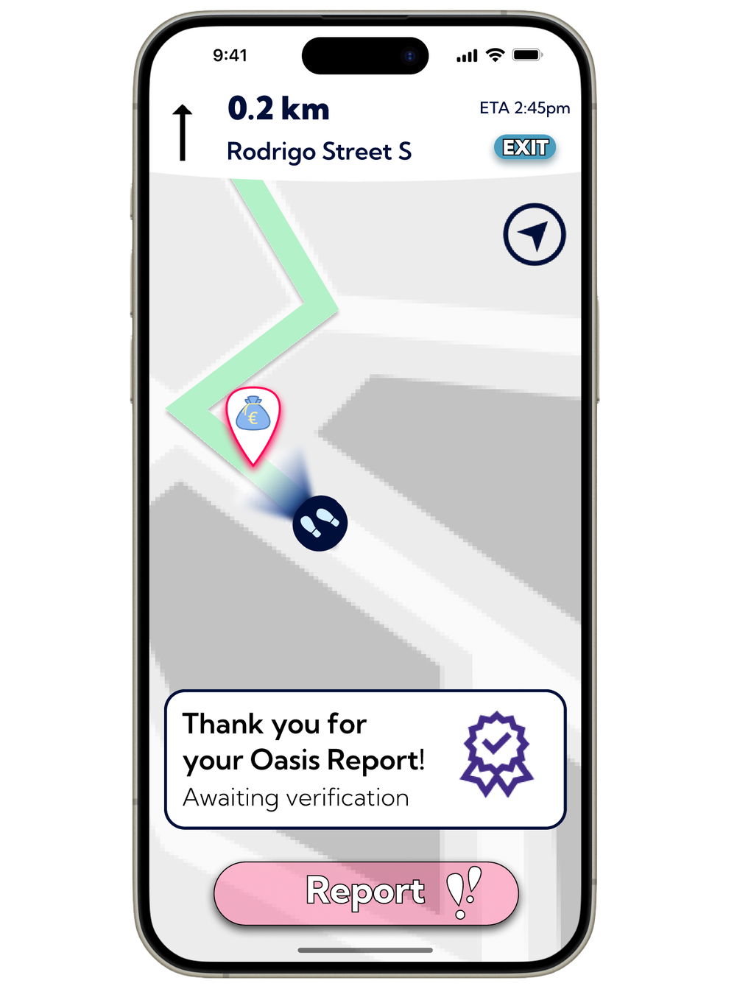
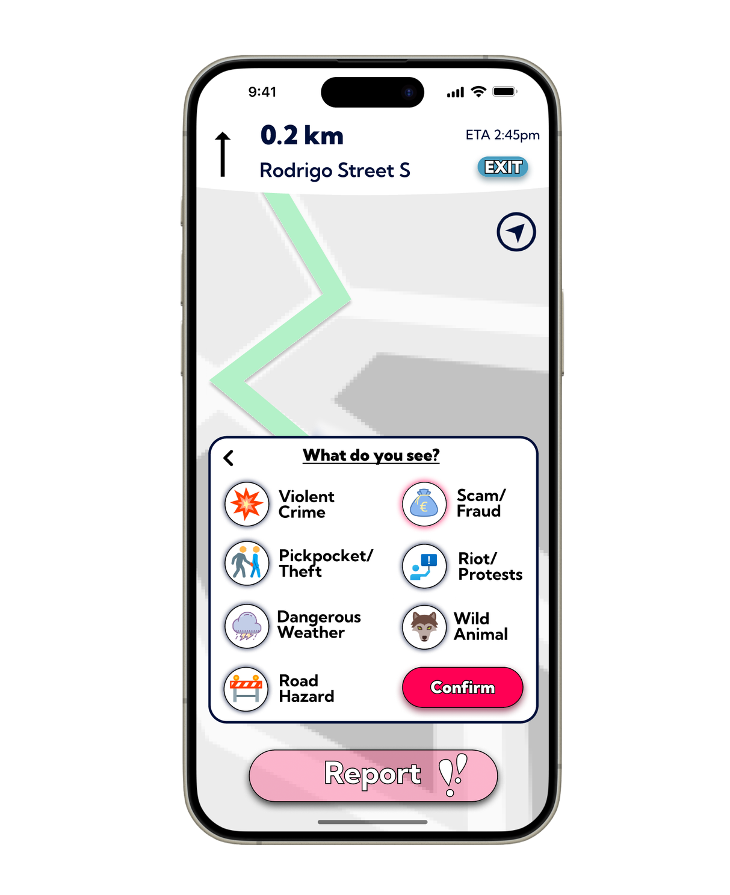
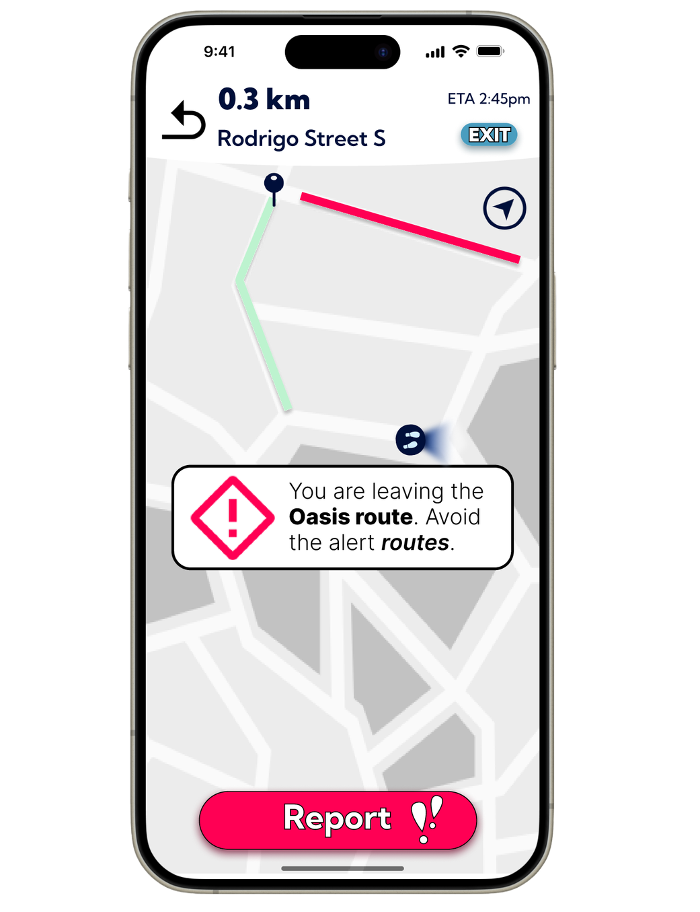

Oasis – Safety Navigation App
- Relevant Skills: Entrepreneurship, Lean Methodology, Venture Strategy and Growth Planning, Financial Analysis and Modeling, Market Research, Customer Discovery & User Validation, Fundraising Strategy
Background
Many travelers and students encounter unsafe conditions due to poorly lit streets, low pedestrian density, limited monitoring, or lack of real-time safety data. Existing navigation apps optimize primarily for speed and distance, leaving a gap for safety-weighted routing. To address this, our team at the European Innovation Academy developed Oasis, a navigation app concept that weights routes using lighting, CCTV coverage, pedestrian activity, and community-reported incidents to improve personal safety during navigation.
Goals
The project aimed to:- Build a mobile app concept that prioritizes safer routes using active, real-world safety signals
- Incorporate real-time incident reporting with multi-user verification to reduce false alerts
- Define a business model combining freemium tiers, B2B partnerships, and location-based offers
- Identify public-sector, university, and law-enforcement data partnerships that could improve route scoring accuracy
Design and Execution
- Feature Development:
- Designed Oasis Routes around a weighted safety model using lighting, CCTV coverage, incident reports, and pedestrian density
- Specified color-coded incident severity ratings and push-notification alerts for route deviations or nearby hazards
- Created a real-time incident reporting workflow with verification thresholds before public display
- Developed user-verification flows using university emails or trusted third-party services
- Business & Finance Model:
- Freemium model: basic navigation for free, premium features (enhanced alerts, route history) under subscription
- Added location-based offers and in-app advertising for revenue diversification
- Planned public-sector partnerships with local governments for data integration and safety collaborations
- Market Strategy:
- Targeted female solo travelers (18–35) and university students as early adopters
- Reached 360+ beta user signups in first launch week
- Growth Roadmap: Rome pilot → EU city expansion → B2B partnerships
- Technical Implementation:
- Specified AES-256 encryption and identity-access-management practices for sensitive user data
- Built an interactive Figma prototype to demonstrate safety-weighted routing, reporting, and guidance flows
Outcome
- Successfully launched early prototype and website demonstrating Oasis functionality.
- Validated interest with 360+ signups in first week of launch
- Identified clear differentiators vs. competitors: safety-optimized routing + verified incident reports
- Established growth milestones: Rome pilot (6 months), EU rollout (1–3 years), B2B scaling (4–10 years).
Image Gallery (Click to zoom):




